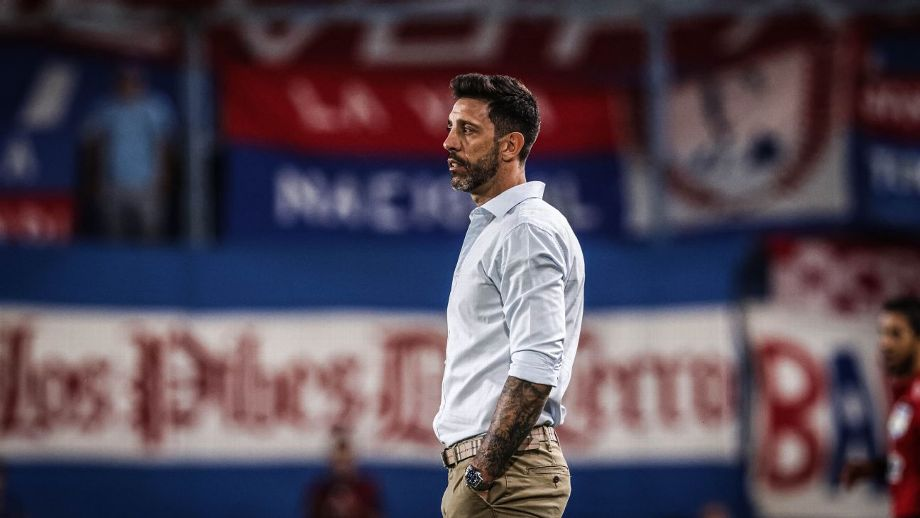

Ciclo cumplido
Nacional cesó a Jorge Bava seis días después de mantenerlo en el cargo de entrenador
El club tricolor resolvió finalizar el ciclo del entrenador pocos días después de haber confirmado su continuidad.
Fútbol uruguayo · 16 de agosto de 2026

Nacional resolvió cesar a Jorge Bava del cargo de director técnico tras la derrota 2-0 ante Racing este sábado en el Estadio Centenario por la segunda fecha del Clausura, torneo en el que los tricolores están últimos con dos derrotas en dos partidos.
La caída ante el equipo de Sayago, sumada a la remontada que los tricolores sufrieron frente a Boston River el pasado domingo en el Gran Parque Central, llevó a la directiva a tomar la decisión de poner fin este domingo al ciclo del entrenador.
La dirigencia de Nacional se reunirá esta tarde para evaluar quién será el sustituto de Bava. Por el momento, no existe consenso respecto al entrenador elegido, aunque en la interna ya se manejaron los nombres de Sebastián Abreu, Gustavo Munúa, Diego Monarriz y Álvaro Gutiérrez.
Nacional buscará un entrenador que pueda asumir lo antes posible, ya que en dos semanas, el 31 de agosto, tendrá el clásico de la cuarta fecha del Clausura ante Peñarol en el Campeón del Siglo.